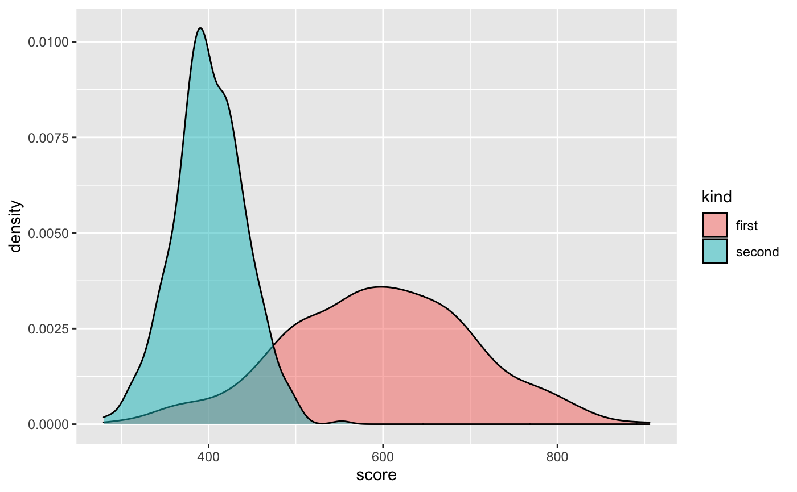
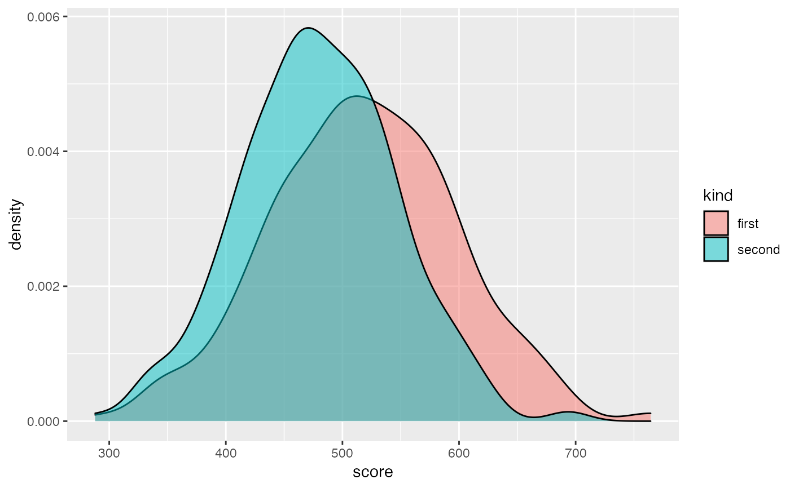
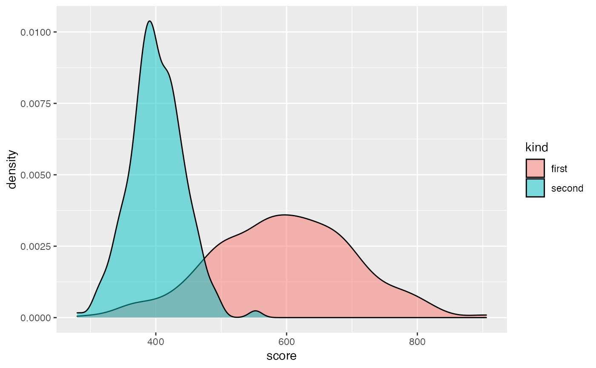
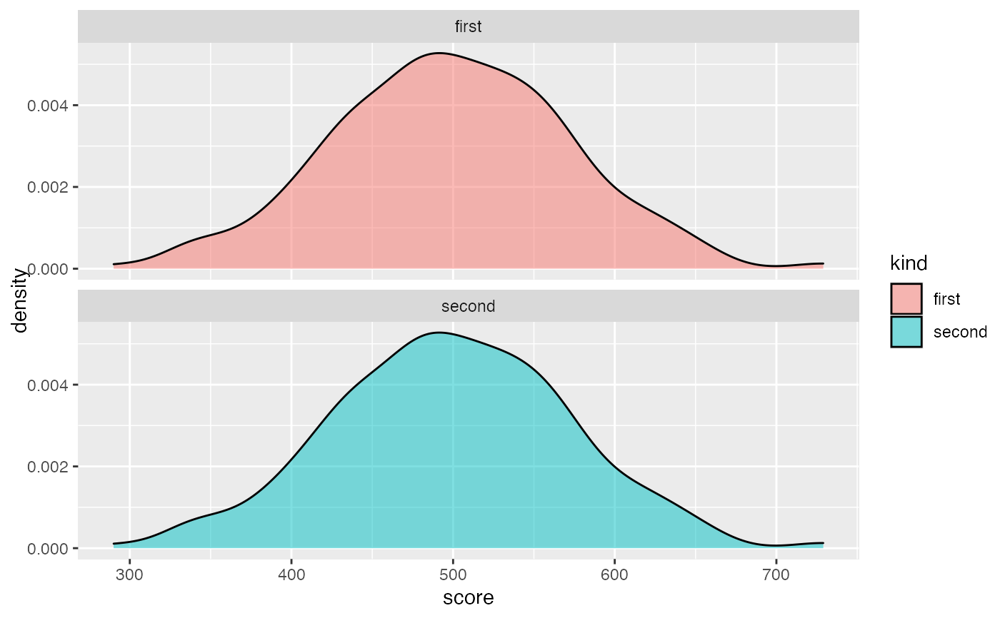

Disparate impact remover is a pre-processing bias mitigation method. It removes bias hidden in numeric columns in data. It changes distribution of ordinal features of data with regard to earth mover distance. It works best if among subgroups there is similar number of observations.
disparate_impact_remover(data, protected, features_to_transform, lambda = 1)
| data |
|
|---|---|
| protected | factor, vector containing sensitive information such as gender, race etc... If vector is character it will transform it to factor. |
| features_to_transform | character, vector of column names to be transformed. Columns must have numerical, ordinal values |
| lambda | numeric, amount of repair desired. Value from 0 to 1, where 0 will return almost unchanged dataset and 1 fully repaired dataset |
repaired data (data.frame object)
This is implementation of geometric method which preserves ranks unlike combinatorial repair. lambda close to 1 denotes that distributions will be very close to each other
and lambda close to 0 means that densities will barely change. Note that although lambda equal 0 should mean that original data will be returned, it usually changes distributions slightly due to
pigeonholing. The number of pigeonholes is fixed and equal to min101, unique(a), where a is vector with values for subgroup. So if some subgroup is not numerous and
the distribution is discrete with small number of variables then there will be small number of pigeonholes. It will affect data significantly.
This method was implemented based on Feldman, Friedler, Moeller, Scheidegger, Venkatasubramanian 2015 https://arxiv.org/pdf/1412.3756.pdf
library("ggplot2") set.seed(1) # custom data frame with kind and score custom_data <- data.frame(kind = as.factor(c(rep("second", 500),rep("first",500))), score = c(rnorm(500, 400,40), rnorm(500, 600, 100))) ggplot(custom_data, aes(score, fill = kind)) + geom_density(alpha = 0.5)fixed_data <- disparate_impact_remover(data = custom_data, protected = custom_data$kind, features_to_transform = "score", lambda = 0.8) ggplot(fixed_data, aes(score, fill = kind)) + geom_density(alpha = 0.5)# lambda 1 gives identical distribution, lambda 0 (almost) original distributions fixed_data_unchanged <- disparate_impact_remover(data = custom_data, protected = custom_data$kind, features_to_transform = "score", lambda = 0) ggplot(fixed_data_unchanged, aes(score, fill = kind)) + geom_density(alpha = 0.5)fixed_data_fully_changed <- disparate_impact_remover(data = custom_data, protected = custom_data$kind, features_to_transform = "score", lambda = 1) ggplot(fixed_data_fully_changed, aes(score, fill = kind)) + geom_density(alpha = 0.5) + facet_wrap(kind~., nrow = 2)